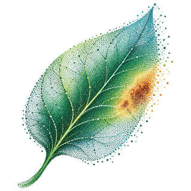
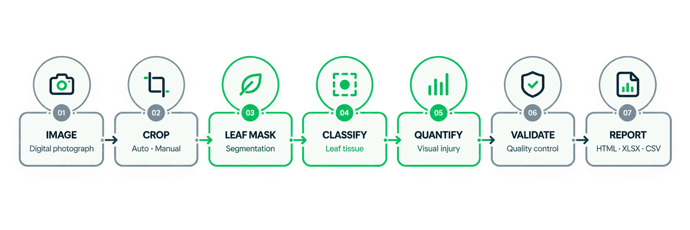
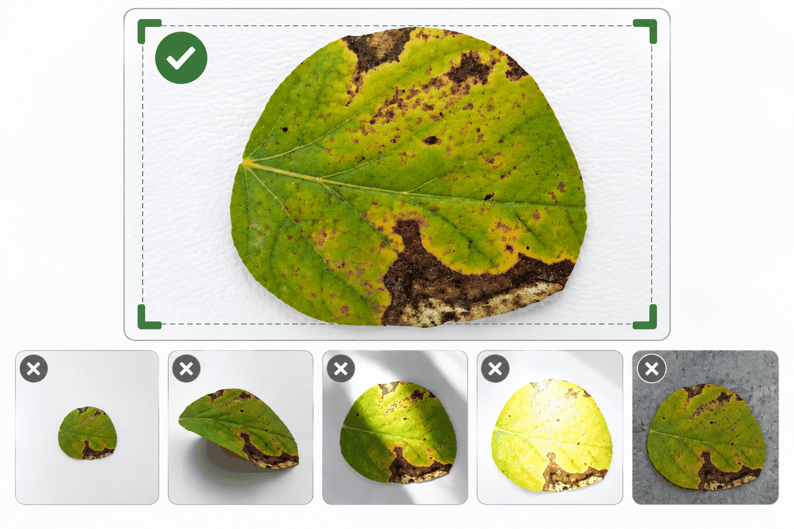
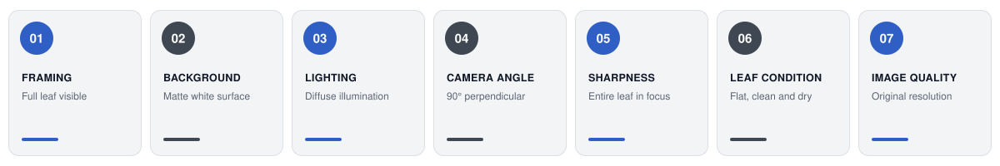
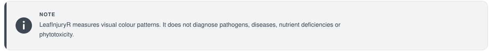
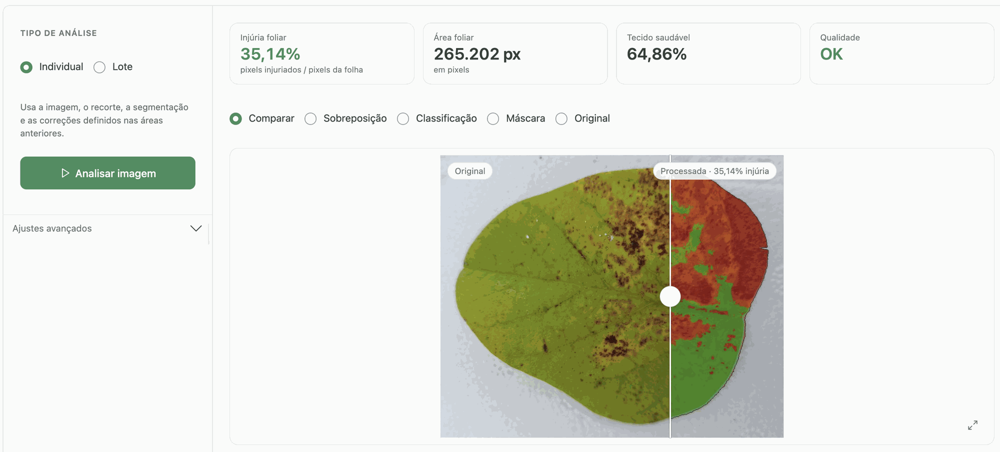

Measure visual leaf injury from photographs,
with every pixel decision open to inspection.
Image guidelines Install Quick start The app How it works Validation Citation Authors

Standardized image acquisition is essential for accurate leaf segmentation and reliable quantification of visual injury. Consistent photographic conditions reduce background interference, illumination artifacts and classification errors, improving reproducibility across samples.

Recommended photographic conditions for consistent and reproducible leaf injury assessment.

Background pixels never enter the calculation.

LeafInjuryR depends on EBImage, distributed through Bioconductor. Install it first, then the package from GitHub.
# Restart R/RStudio before installing (especially on Windows).
install.packages(c("BiocManager", "remotes"))
# Avoid updating unrelated packages or packages currently in use.
BiocManager::install("EBImage", ask = FALSE, update = FALSE)
# Install the package and its mandatory dependencies only.
remotes::install_github(
"wilhanvalasco/LeafInjuryR",
dependencies = NA,
upgrade = "never"
)
# Optional: install the graphical interface dependencies.
install.packages(c("shiny", "bslib", "DT"))
library(LeafInjuryR)
run_leafinjury_app()On Windows, if a package DLL is locked (for example
cli.dll), close all R sessions and restart RStudio before
retrying. The message Installation paths not writeable may
refer to the system R library under Program Files;
installing to your personal R library normally avoids administrator
access. Do not select a to update all packages when
prompted.
library(LeafInjuryR)
file <- system.file("extdata", "leaf_example_02.jpg", package = "LeafInjuryR")
result <- analyze_leaf(file, crop = "auto", multiclass = TRUE)
result$metrics
plot(result) leaf_pixels injured_percent chlorotic_percent necrotic_percent
428731 18.42 11.73 6.69Illustrative output. Injured = chlorotic + necrotic.
| Function | What it does |
|---|---|
analyze_leaf() |
Analyse one image |
analyze_leaf_batch() |
Analyse a folder of images and write reports |
crop_leaf() |
Crop automatically or by hand |
segment_leaf() |
Build the leaf mask and classify tissue |
validate_leaf() |
Compare results with reference masks |
run_leafinjury_app() |
Open the local Shiny app |
The full workflow, without writing R code.
run_leafinjury_app()

Analysis tab: original photograph on the left, classified tissue on the right.
| Image | Segmentation | Analysis | Results |
|---|---|---|---|
| Import, crop, zoom, reset | Leaf mask, classification, manual correction, overlay | Single or batch, compare, progress | Table, validation, reports, export |
flowchart LR
A[RGB image] --> B[Segment]
B --> M(["lab · hsv · exg · otsu · adaptive · kmeans"])
M --> C[Leaf mask]
C --> D[Classify tissue]
D --> H[Healthy]
D --> K[Chlorotic]
D --> N[Necrotic]
D --> O[Other]
K --> R[Injury %]
N --> R
classDef key stroke:#1DBB73,stroke-width:2px;
class C,R key;Segmentation separates leaf from background; classification then runs only inside the leaf mask.
seg <- segment_leaf(image, method = "auto")| Step | Methods |
|---|---|
| Segmentation | auto, lab,
hsv, exg, otsu,
adaptive, kmeans |
| Tissue classification | auto, lab,
relative, hsv, exgr,
vote |
When the automatic mask is wrong, correct a region and recompute. Corrections are stored with the analysis.
img <- crop_leaf(file)
seg <- segment_leaf(img)
fix <- data.frame(
action = "healthy",
shape = "rect",
xmin = 40, xmax = 140,
ymin = 220, ymax = 300
)
seg_corrected <- segment_leaf(
img,
mode = "manual",
corrections = fix,
segmentation = seg
)
result <- analyze_leaf(img, segmentation = seg_corrected)
result$metricsbatch <- analyze_leaf_batch(
"folder_with_photos/",
output_dir = "results/",
crop = "auto"
)results/
├── report.html statistics, charts, image gallery, parameters
├── results.xlsx results, summary, parameters
├── results.csv analysis-ready table
├── masks/ segmentation masks
└── overlays/ processed overlaysPhysical area is reported only when a valid scale is supplied.
result <- analyze_leaf(file, pixels_per_cm = 118.4)
Compare the automated masks with manually drawn reference masks.
validation <- validate_leaf(
result,
reference_leaf_mask = "leaf_mask.png",
reference_injury_mask = "injury_mask.png"
)
validationReported metrics: IoU, Dice, sensitivity, specificity, precision and F1.
A suggested order for a study: acquire images, draw reference masks, calibrate thresholds, validate, then analyse the full set.
result$parametersEach analysis records the package version, date, segmentation and classification methods, thresholds, crop, scale and any manual corrections.
| Version | Scope | Status |
|---|---|---|
| 0.1 | Core analysis | Released |
| 0.2 | Shiny app and reports | Current |
| 0.3 | Extended validation | Planned |
| 1.0 | Stable API | Planned |
| Later | Machine learning, mobile | Exploring |
citation("LeafInjuryR")Package authors: Wilhan Valasco dos Santos (author, maintainer) and Walter Baida Garcia Coutinho (author).
GPL (>= 3)
D E V E L O P E R · M A I N T A I N E R
Agronomist and data scientist building open tools for plant science.
A C A D E M I C P R O F I L E
A U T H O R
Departamento de Estatística, Universidade Federal de Viçosa (UFV), Viçosa, Minas Gerais, Brazil
LeafInjuryR. Built with R, EBImage and Shiny.
Your images stay on your computer.